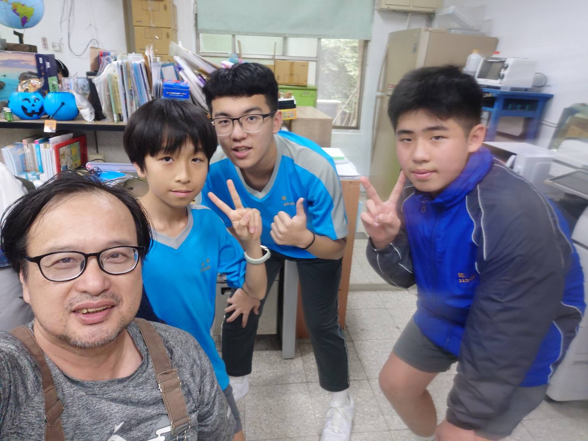
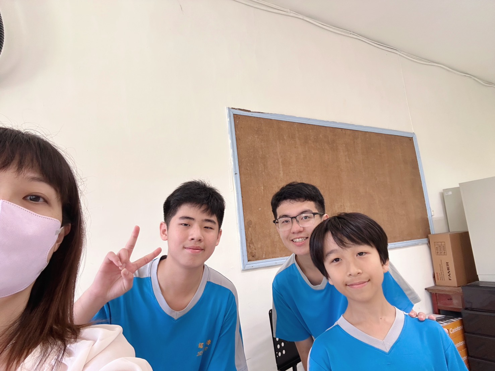

 |
綜合老師 陳俊吉 訪問內容: 1.來銘傳幾年了? 3年 2.為什麼要當老師? 因為在國中的時候，有個老師救了他的未來，並且接納了他(當時俊吉老師很不乖)，快退休的時候，發現學校有缺，所以就來當老師。 3.有什麼印象深刻的事? 在第一年當老師的時候，帶學生到家政教室做菜，有一位學生想學<中華一番>，就把食物拋到空中，用刀子去切，當時真的恐怖! |
 |
音樂老師 萬怡庭 訪問內容: 至今已經在銘傳國中教了10多年了，而且老師原來是在管弦樂團中，在因緣際會下來執教。 在老師生涯中，最令她印象深刻的事，是在某一屆上音樂課的時候，有一名學生在外面把鎖弄壞，全班都被鎖在裡面，令他回味至今。 |